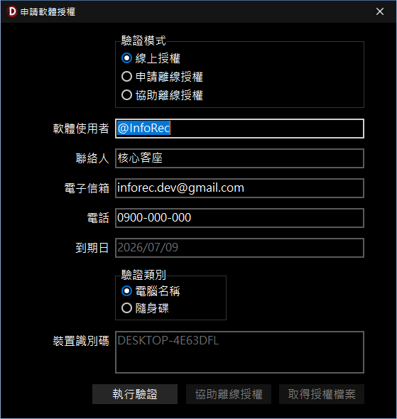

申請軟體授權
本功能用於 InfoRec 軟體（以下簡稱 InfoRec）的授權申請作業。系統提供線上及離線兩種申請授權方式。
一、 授權設定說明
-
驗證模式與資料填寫：
- 「驗證模式」依網路環境提供三種途徑：
- 「線上授權」：適用可自行於區塊鏈 Web3 自行授權的使用者。
- 「申請離線授權」：無區塊鏈 Web3 使用經驗，或使用 InfoRec 軟體的電腦未連接網路時，可採離線申請授權。申請授權後，會產出申請檔案，請將該檔案提供給「協助離線授權」人進行授權，系統亦會自動寄送至 InfoRec 著作者備查。
- 「協助離線授權」：有使用區塊鏈 Web3 的人，可以協助他人進行授權。
- 「軟體使用者資訊」：請確實填寫軟體使用者、聯絡人、電子信箱及電話，作為後續授權識別的依據。
- 「到期日」：顯示軟體授權或版本更新的有效期限。
-
裝置綁定與執行：
- 「驗證類別」：可選擇將授權綁定於目前本機的「電腦名稱」，或是外部的「隨身碟」。
- 「裝置識別碼」：系統會自動讀取並顯示所選裝置的唯一硬體識別碼。
- 「執行驗證」：資料確認無誤後，點擊此按鈕將依據您選擇的驗證模式執行對應動作：
- 「線上授權」：系統產生 QR Code 引導您完成授權，您必須要有 SOLANA SEEKER 或 Android（安裝本站提供的 APK）或於電腦上面安裝 SOLANA 錢包（例如 Phantom）。
- 「申請離線授權」：系統會產出申請授權的檔案，亦會自動寄送至 InfoRec 著作者備查。

申請軟體授權視窗